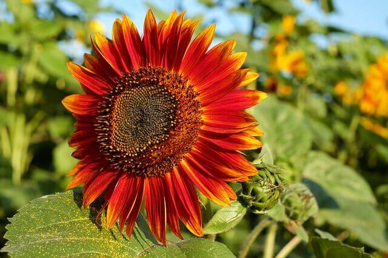

Red Helianthus Annuus
Red Sun is a branching variety of Sunflower, which produces vibrant red petals, accented with a dark brown center.
Each plant will grow to a mature height of roughly 5 to 6 feet tall.
Red Sun displays up to 10 gorgeous flowers per plant, and will attract all sorts of beneficial insects to the garden as well. Some of these insects include butterflies, bumblebees, honeybees and hummingbirds.
